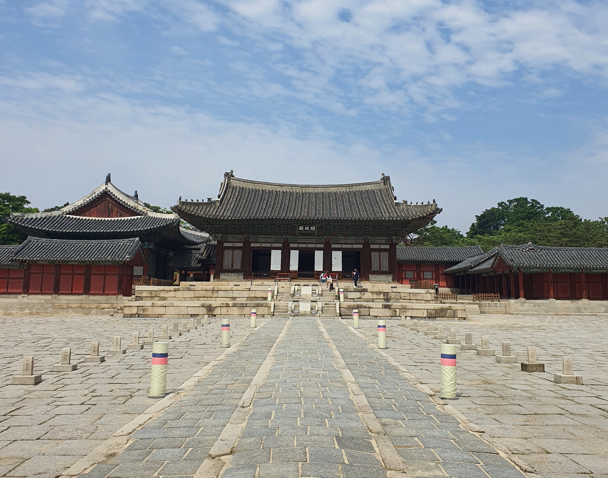
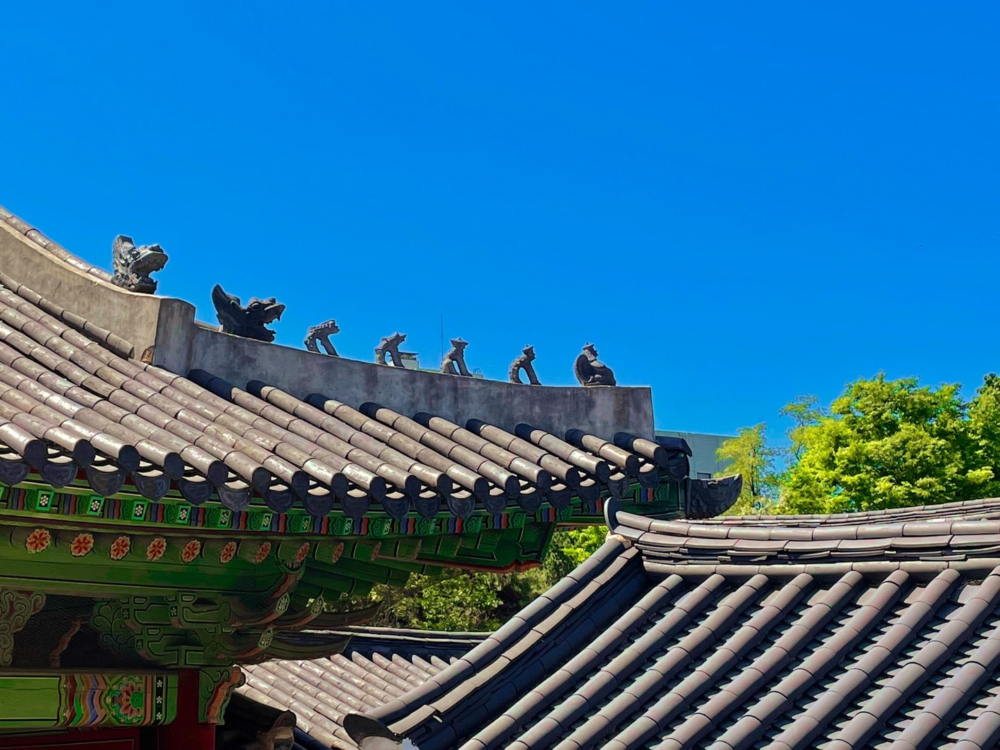
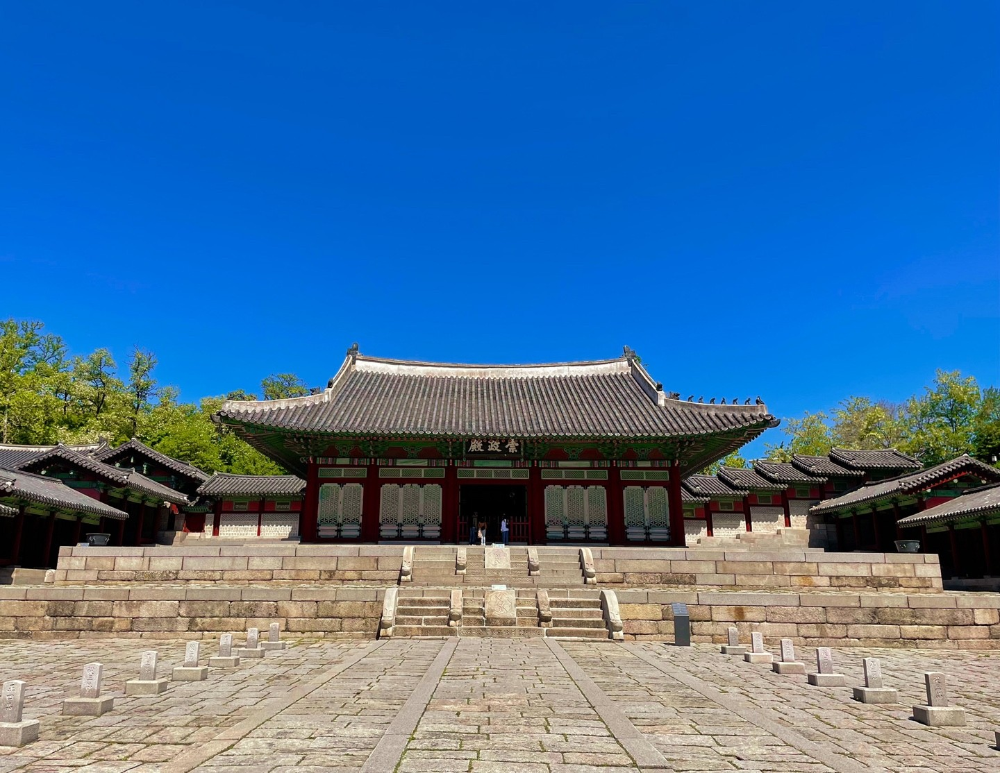

우리가 미처 알지 못 했던, 창덕궁의 사실들
국보 제331호 창덕궁 이문원 측우대 (昌德宮 摛文院 測雨臺)
국보 제331호 ‘창덕궁 이문원 측우대 (昌德宮 摛文院 測雨臺)’는 1782년(정조 6) 정조의 명에 의해 창덕궁 규장각의 부속 건물인 이문원(摛文院) 앞에 설치되었던 것으로, 이는 측우대 좌우 네 면에 새겨진 ‘측우기명(測雨器銘)’과 19세기 궁궐그림인 <동궐도(東闕圖)>를 통해 확인된다. <동궐도>에는 이문원 앞뜰에 받침돌 없이 놓인 것으로 그려진 측우대 한 기가 그려진 것을 볼 수 있는데 이것이 바로 ‘창덕궁 이문원 측우대’이다.
국보 제331호 ‘창덕궁 이문원 측우대’는 1442년(세종 24) 조선에서 농업에 활용하고자 세계 최초로 측우기와 측우대를 제작한 이후 조선 후기에도 전통이 면면이 이어져왔음을 보여주는 유물로서, ‘공주 충청감영 측우기’, ‘대구 경상감영 측우대’와 함께 국보로 지정해 우리나라 전통과학의 우수성과 그 위상을 국내외에 널리 알릴 가치가 충분하다.
[출처 : 문화재청 국가문화유산포털]
보물 제1763호 창덕궁 부용정 (昌德宮 芙蓉亭)
부용정은 궁궐지에 따르면 조선 숙종 33년(1707)에 이곳에 택수재(澤水齋)를 지었는데, 정조 때에 이를 고쳐 짓고 이름을 ‘부용정(芙蓉亭)’이라 바꾸었다고 한다. 『동국여지비고』에는 “주합루 남쪽 연못가에 있다. 연못 안에 채색하고 비단 돛을 단 배가 있어, 정조 임금께서 꽃을 감상하고 고기를 낚던 곳이다”라고 하여 이곳에서 왕이 과거에 급제한 이들에게 주연을 베풀고 축하해 주기도 했으며, 신하들과 어울려 꽃을 즐기고 시를 읊기도 하였는데, 1795년 수원 화성을 다녀온 정조가 신하들과 낚시를 즐겼다고 전한다. 기둥에는 이곳의 풍광을 읊은 시를 적은 주련(柱聯) 10개가 걸려 있다.
부용정은 창덕궁 후원 초입에 천원지방의 조형원리에 따라 조성한 대표적 연못인 부용지에 지은 마루식 정자로 연못에 인접하여 자연의 선경을 인공적으로 만들어, 풍류를 통해 수양을 하는 한국 정자건축의 대표적 작품이다. 열십(十)자 모양의 독특한 평면 형태, 공간구성, 건물의 장식 등이 뛰어난 비례와 대비로 건물의 아름다움의 극치를 보여주고 있는 건물로 역사적, 예술적, 건축적으로 보존가치가 높다.
[출처 : 문화재청 국가문화유산포털]

보물 제1769호 창덕궁 주합루 (昌德宮 宙合樓)
창덕궁 주합루(昌德宮宙合樓)는 정조 즉위년(1776) 창덕궁 후원에 어제·어필을 보관할 목적으로 건립한 2층 건물이다. 기단은 네벌대의 장대석을 바른층 쌓기하고 맨 위의 갑석에는 쇠시리를 넣어 마무리하였다. 건물은 정면 5칸, 측면 4칸의 2층 건물로 기둥은 모두 상하층 통주로 사용하였고, 사방을 외부 기둥에서 1칸씩 물려서 퇴를 두었으며, 내부는 정면 3칸, 측면 2칸으로 구성하였다. 공포는 궁궐에서 전형적으로 사용되는 이익공으로 주두와 익공살미, 행공이 짜여지고 그 위에 재주두가 놓이며 운공으로 장식되어 있으며, 처마는 부연을 둔 겹처마이고, 지붕은 팔작지붕이다. 용마루와 내림마루는 양성바름으로 마감하였고 용마루 끝에는 취두를, 내림마루에는 용두를, 추녀마루에는 잡상과 용두를 얹어 권위가 높은 건물임을 나타내고 있다.
정조의 정책개발과 개혁정치, 조선 중기 문예부흥의 산실로서 정약용과 박제가, 유득공, 이덕무 등 다양한 인재들이 활동하던 중요한 공간이며, 정조가 지은 어제와 어필, 어진, 인장 등을 보관하였던 장소로 그 원형이 잘 남아있어 역사적 가치가 높다. 또한 건물은 경사진 높은 지형에 배치하여 자연과 조화를 이루도록 하였으며, 1층은 왕실도서 보관에 적절한 퇴와 사분합 들문을 설치하였고 내부는 온돌을 두었다. 2층 열람실은 사방의 빼어난 경관을 조망할 수 있도록 배치하는 등 건물의 기능에 맞는 실 배분이 충실히 반영되었다. 이처럼 주합루는 역사적, 건축사적 가치가 높다.
[출처 : 문화재청 국가문화유산포털]
보물 제1762호 창덕궁 금천교 (昌德宮 錦川橋)
금천교는 창덕궁의 돈화문과 진선문(進善門)사이를 지나가는 명당수(明堂水)위에 설치되어 있다. 창덕궁의 명당수, 즉 금천(禁川)은 북쪽에서 남쪽으로 흘러내려 돈화문 오른쪽까지 와서 궐 밖으로 빠져나가는데, 이 어구(御溝)물가에는 화강석 6∼7단을 가지런하게 쌓은 축대를 설치하였고, 여기에 금천교를 설치하여 궐내로 들어갈 수 있게 하였다.
금천교는 창덕궁이 창건되고 6년 뒤인 태종 11년(1411)3월 진선문 밖 어구에 설치되었는데, 그 후 숱한 화재와 전란에도 불구하고 창건 당시의 모습을 보존하고 있다. 현존하는 궁궐 안 돌다리 가운데 가장 오래된 것이다.
현재 서울에 남아있는 가장 오래된 돌다리이며, 궁궐의 위엄을 보여주는 상징적 조각상과 아름다운 문양, 견고하고 장중한 축조 기술 등이 돋보이는 이중 홍예교로서 역사적, 예술적, 건축적 가치가 뛰어나다.
[출처 : 문화재청 국가문화유산포털]
